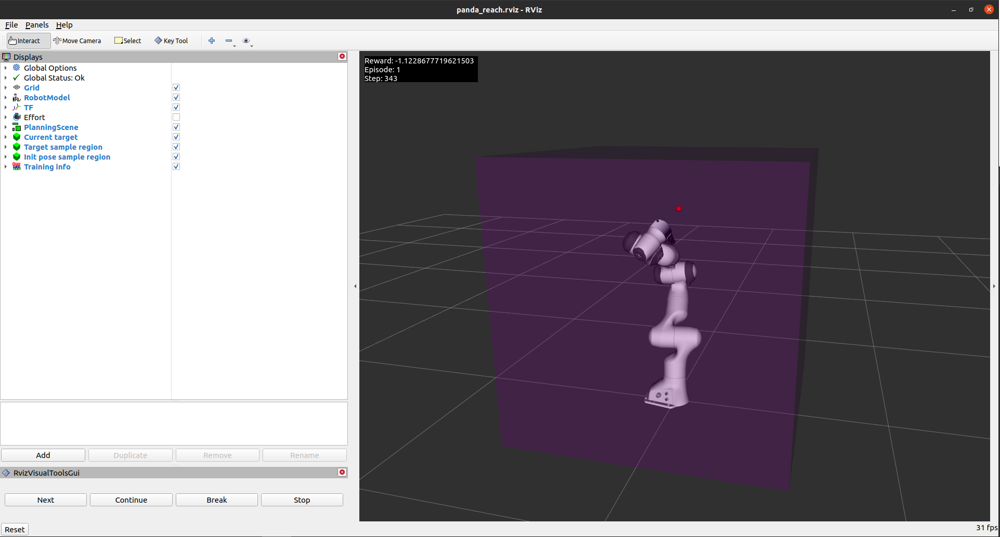

ros_gazebo_gym.task_envs.panda.panda_reach
An ROS Panda reach gymnasium environment.
- Observation space:
As the panda environment inherits from the gym.GoalEnv class, the observation space is a dictionary.
- Type: Dict
observation (
numpy.ndarray): The current end-effector pose, joint positions and joint velocities.desired_goal (
numpy.ndarray): The desired end-effector pose.achieved_goal (
numpy.ndarray): The achieved end-effector pose.
- Action space:
The action space of the panda environment is dependent on the control type and whether the gripper is loaded. The following action spaces are available:
- Joint trajectory control:
- Type: Box(7)
panda_joint1 (
float): The position of the first joint.panda_joint2 (
float): The position of the second joint.panda_joint3 (
float): The position of the third joint.panda_joint4 (
float): The position of the fourth joint.panda_joint5 (
float): The position of the fifth joint.panda_joint6 (
float): The position of the sixth joint.panda_joint7 (
float): The position of the seventh joint.
- Joint position control:
- Type: Box(7)
panda_joint1 (
float): The position of the first joint.panda_joint2 (
float): The position of the second joint.panda_joint3 (
float): The position of the third joint.panda_joint4 (
float): The position of the fourth joint.panda_joint5 (
float): The position of the fifth joint.panda_joint6 (
float): The position of the sixth joint.panda_joint7 (
float): The position of the seventh joint.
- Joint effort control:
- Type: Box(7)
panda_joint1 (
float): The effort of the first joint.panda_joint2 (
float): The effort of the second joint.panda_joint3 (
float): The effort of the third joint.panda_joint4 (
float): The effort of the fourth joint.panda_joint5 (
float): The effort of the fifth joint.panda_joint6 (
float): The effort of the sixth joint.panda_joint7 (
float): The effort of the seventh joint.
- End-effector position control:
- Type: Box(7)
x (
float): The x position of the end-effector.y (
float): The y position of the end-effector.z (
float): The z position of the end-effector.rx (
float): The x component of the quaternion orientation of the end-effector.ry (
float): The y component of the quaternion orientation of the end-effector.rz (
float): The z component of the quaternion orientation of the end-effector.rw (
float): The w component of the quaternion orientation of the end-effector.
If the gripper is loaded, the action space is extended with the following dimensions:
- Type: Box(2)
gripper_width (
float): The width of the gripper - only if the gripper is loaded.gripper_max_effort (
float): The maximum effort of the gripper - only if the gripper is loaded.
Attention
The gripper width is ignored when the
graspingparameter is set totruein the task environment config file. or when thegripper_max_effortis set to a value greater than zero.
- Episode termination:
The episode terminates when the end-effector is within a certain distance of the goal position. The distance is defined by the
distance_thresholdparameter in the task environment configuration file. If thehold_samplesparameter is greater than zero, the episode will terminate afterhold_samplesconsecutive samples are within thedistance_threshold. The episode will also terminate if the maximum number of samples is reached.- Environment Goal:
In this environment the agent has to learn to move the panda robot to a given goal position. It was based on the FetchReach-v2 gymnasium environment.
- Reward function:
The reward function is defined as the negative of the Euclidean distance between the end-effector and the goal position. If the
positive_rewardparameter is set totrue, the absolute value of the reward is returned:\[reward = -\sqrt{(x_{ee} - x_{goal})^2 + (y_{ee} - y_{goal})^2 + (z_{ee} - z_{goal})^2}\]- Initialization:
The environment is initialized by loading the Panda robot model and setting its initial position and orientation. The environment parameters can be set in the configuration file located at ros_gazebo_gym/task_envs/panda/config/panda_reach.yaml.
Environment step return:
In addition to the observations, the reward, and a termination and truncation boolean, the environment also returns an info dictionary:
[observation, reward, termination, truncation, info_dict]The info dictionary contains the following information:
reference: The reference position (x,y,z) that the Panda Reach is tracking (i.e. the goal position).
state_of_interest: The state that should track the reference (SOI) (i.e. the end-effector position).
reference_error: The error between SOI and the reference (i.e. the error between the end-effector position and the goal position).
Configuration
The configuration files for this environment are found in the panda task environment config folder.
Module Contents
Classes
Class that provides all the methods used for the algorithm training. |
Attributes
- ros_gazebo_gym.task_envs.panda.panda_reach.MOVEIT_GET_RANDOM_JOINT_POSITIONS_TOPIC = 'panda_moveit_planner_server/get_random_joint_positions'[source]
- ros_gazebo_gym.task_envs.panda.panda_reach.MOVEIT_SET_JOINT_POSITIONS_TOPIC = 'panda_moveit_planner_server/set_joint_positions'[source]
- ros_gazebo_gym.task_envs.panda.panda_reach.MOVEIT_GET_RANDOM_EE_POSE_TOPIC = 'panda_moveit_planner_server/get_random_ee_pose'[source]
- ros_gazebo_gym.task_envs.panda.panda_reach.MOVEIT_ADD_PLANE_TOPIC = 'panda_moveit_planner_server/planning_scene/add_plane'[source]
- ros_gazebo_gym.task_envs.panda.panda_reach.SET_FRANKA_MODEL_CONFIGURATION_TOPIC = 'set_franka_model_configuration'[source]
- ros_gazebo_gym.task_envs.panda.panda_reach.VALID_EE_CONTROL_JOINTS = ['x', 'y', 'z', 'rx', 'ry', 'rz', 'rw'][source]
- ros_gazebo_gym.task_envs.panda.panda_reach.AVAILABLE_HAND_COMMANDS = ['gripper_width', 'gripper_max_effort'][source]
- class ros_gazebo_gym.task_envs.panda.panda_reach.PandaReachEnv(control_type='effort', positive_reward=False, config_path=CONFIG_FILE_PATH, gazebo_world_launch_file='start_reach_world.launch', visualize=None, action_space_dtype=np.float64, observation_space_dtype=np.float64)[source]
Bases:
ros_gazebo_gym.robot_envs.panda_env.PandaEnv,gymnasium.utils.EzPickleClass that provides all the methods used for the algorithm training.
- action_space
Gym action space object.
- Type:
- observation_space
Gym observation space object.
- Type:
- goal
The current goal.
- Type:
geometry_msgs.PoseStamped
Initializes a Panda Task Environment.
- Parameters:
control_Type (str, optional) – The type of control you want to use for the panda robot (i.e. hand and arm). Options are:
trajectory,position,effortorend_effector. Defaults toeffort.positive_reward (bool, optional) – Whether you want to use a positive reward instead of a negative reward. Defaults to
False.config_path (str, optional) – Path where the environment configuration value are found. The path is resolved relative to the
panda_reachclass file.gazebo_world_launch_file (str, optional) – Name of the launch file that loads the gazebo world. Currently only the launch files inside the panda_gazebo package are supported. Defaults to
start_reach_world.launch.visualize (bool, optional) – Whether you want to show the RViz visualization. Defaults to
Nonemeaning the task configuration file values will be used.action_space_dtype (union[numpy.dtype, str], optional) – The data type of the action space. Defaults to
np.float64.observation_space_dtype (union[numpy.dtype, str], optional) – The data type of the observation space. Defaults to
np.float64.
Important
In this environment, the joint trajectory control is not implemented yet for multiple waypoints. This is because the action space only contains one waypoint. The
set_arm_joint_trajectorymethod, however, already accepts multiple waypoints. As a result, task environment can be easily extended to work with multiple waypoints by modifying thePandaReachEnv~._create_action_spacemethod.